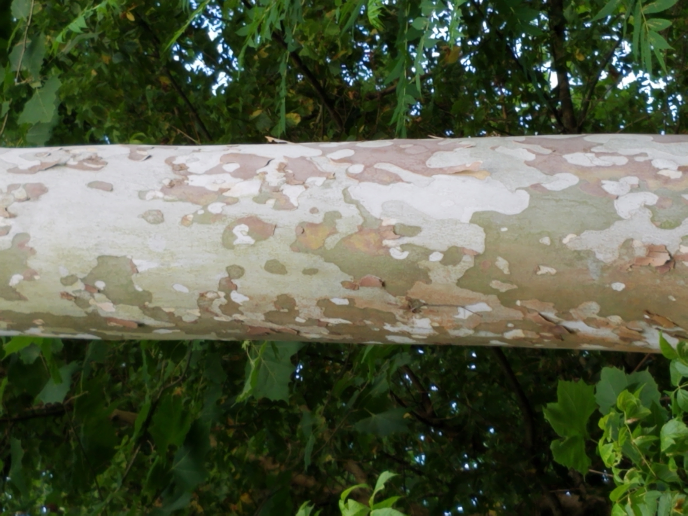

Nice little clouds playing around in the sky. If there's two big trees invariably sooner or later there's gonna be a little tree. We'll put a happy little bush here. These little son of a guns hide in your brush and you just have to push them out. Let your imagination just wonder around when you're doing these things. Learn when to stop. Decide where your cloud lives. Maybe he lives right in here. Just make a decision and let it go. We might as well make some Almighty mountains today as well, what the heck. You can do it.
There are many varities of Sycamore in the world, but the species native to the Eastern United States is appropriately called the American Sycamore. Learn when to stop. Decide where your cloud lives. Maybe he lives right in here. Just make a decision and let it go. We might as well make some Almighty mountains today as well, what the heck. You can do it.
